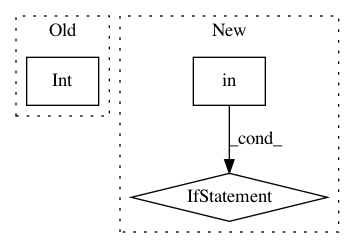

28028a0544632307fe48e66a15a4b2a22c3dddda,allennlp/common/from_params.py,,construct_arg,#Any#Any#Any#Any#Any#,296
Before Change
elif annotation == str:
return popped_params
elif annotation == int:
return int(popped_params) // type: ignore
elif annotation == bool:
return bool(popped_params)
elif annotation == float:
After Change
elif annotation == float:
// Floats are special because in Python, you can put an int wherever you can put a float.
// https://mypy.readthedocs.io/en/stable/duck_type_compatibility.html
if type(popped_params) in {int, float}:
return popped_params
else:
raise TypeError(f"Expected {argument_name} to be numeric.")
// This is special logic for handling types like Dict[str, TokenIndexer],
// List[TokenIndexer], Tuple[TokenIndexer, Tokenizer], and Set[TokenIndexer],
// which it creates by instantiating each value from_params and returning the resulting structure.
elif origin in (Dict, dict) and len(args) == 2 and can_construct_from_params(args[-1]):
value_cls = annotation.__args__[-1]
value_dict = {}
In pattern: SUPERPATTERN
Frequency: 3
Non-data size: 3
Instances
Project Name: allenai/allennlp
Commit Name: 28028a0544632307fe48e66a15a4b2a22c3dddda
Time: 2020-02-14
Author: dirkg@allenai.org
File Name: allennlp/common/from_params.py
Class Name:
Method Name: construct_arg
Project Name: microsoft/nni
Commit Name: 1c6f1efa8b297f73bde09f8bcbc876439b8edf4e
Time: 2020-04-26
Author: 27178119+squirrelsc@users.noreply.github.com
File Name: tools/nni_gpu_tool/gpu_metrics_collector.py
Class Name:
Method Name: check_ready_to_run
Project Name: microsoft/nni
Commit Name: b7cd20e62f7dfb7b28407c84cd6b48098fddb915
Time: 2019-07-11
Author: Quanlu.Zhang@microsoft.com
File Name: src/sdk/pynni/nni/bohb_advisor/bohb_advisor.py
Class Name: BOHB
Method Name: handle_trial_end